地政学
マラッカ海峡とシンガポール海峡を結ぶ位置にあり、港、空港、金融、軍事協力で東南アジアと世界市場をつなぐ。資源が少ない島国だからこそ、航路、法制度、水、食料、外交を安全保障として扱う都市である島国。
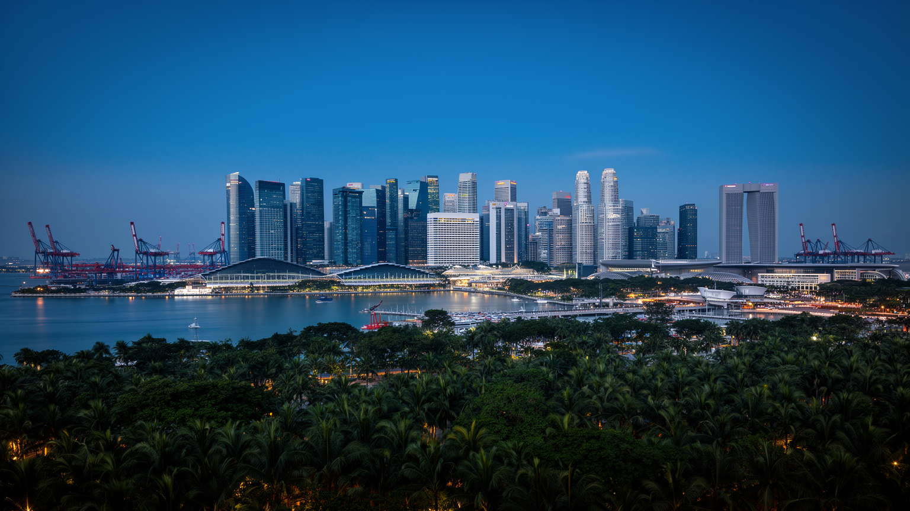
🇸🇬 シンガポール / アジア / World City Atlas
海峡、港湾、空港、金融、住宅政策、多民族社会が一つの島に圧縮された、東南アジアの都市国家。
都市の骨格
小さな島は、マラッカ海峡とシンガポール海峡、港と空港、金融と法制度、住宅政策と多民族社会を重ねて世界へ開いている。
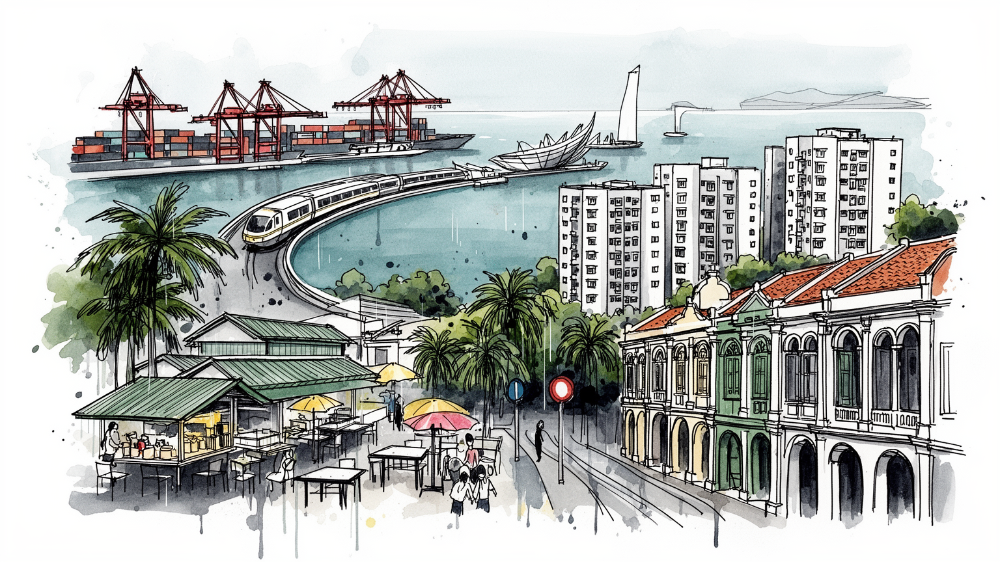
マラッカ海峡とシンガポール海峡を結ぶ位置にあり、港、空港、金融、軍事協力で東南アジアと世界市場をつなぐ。資源が少ない島国だからこそ、航路、法制度、水、食料、外交を安全保障として扱う都市である島国。
コンテナ港、航空整備、金融、保険、半導体、バイオ医薬、石油化学が狭い国土を高付加価値化する。専門職の輝きの背後では、建設、清掃、介護、飲食を担う移民労働が都市の日常を静かに支える基盤である都市だ。
華人、マレー系、インド系、ユーラシアンの生活が近距離で重なり、仏教、道教、イスラム教、ヒンドゥー教、キリスト教の施設が街区に並ぶ。多言語政策は調和を支えつつ、管理の緊張も生み出す暮らしの基盤である。
大半の住民はHDB団地で暮らし、MRTとホーカーセンターが毎日の移動と食事を支える。観光客はマリーナベイ、庭園、民族街、空港を巡るが、その背後には土地不足と生活費の圧力がある都市社会。日々の暮らしを映す街だ。
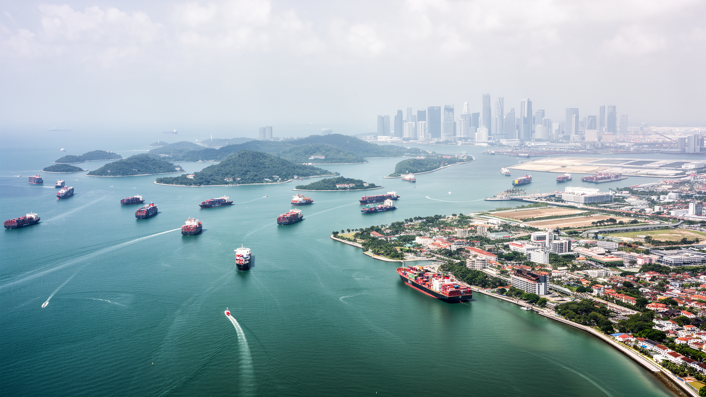
シンガポールはマレー半島の南端に位置し、マラッカ海峡から南シナ海へ抜ける船の流れを受け止める。国土は小さいが、世界のコンテナ、エネルギー、部品、食料が通る航路の近くにあり、その位置が都市の政治判断を鋭くしている。水、電力、食料、労働力を外部に依存しながら、港湾、空港、金融、法制度、軍事協力を組み合わせて自立性を高めてきた。隣国マレーシア、インドネシアとの関係は、橋やフェリーの往来だけでなく、領海、環境、越境通勤、煙害、水供給にも及ぶ。都市の高層景観を眺めるだけでは、島が常に周辺地域と交渉し、航路の安全と国家の脆弱性を同時に抱えていることは見えにくい。シンガポールの強さは閉じた都市国家の孤立ではなく、周辺の海と半島を読む能力にある。港の位置、海軍基地、空港の滑走路、埋立地の拡張は、すべて安全保障と都市計画を結びつける選択である。海峡を通る船が増えるほど、事故、汚染、緊張のリスクも増すため、管理能力そのものが国の信用になる。島の地理は、繁栄の条件であると同時に、油断すれば弱点にも変わる。周辺国との緊張を避けながら通商の自由を守るため、外交は常に実務的で慎重だ。海峡の安全、海賊対策、海底ケーブル、燃料供給は日々の生活から遠く見えるが、物価と雇用を支える基盤である。都市は海を眺めるだけでなく、海によって試され続けている。
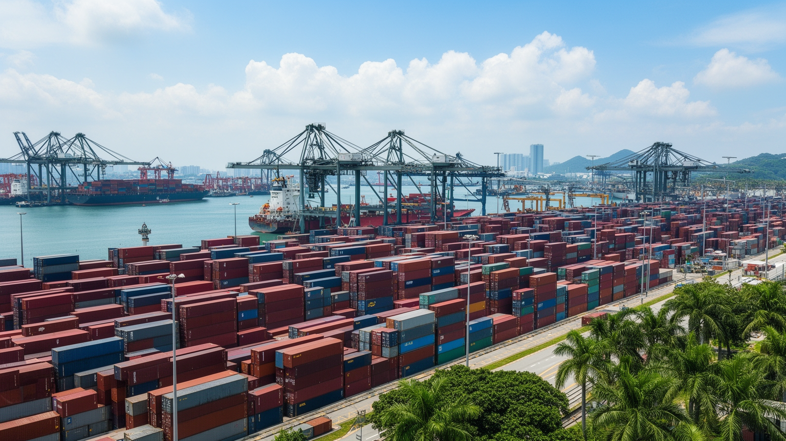
シンガポール港は、都市の中心から少し離れた場所で巨大な物流の時間を刻んでいる。コンテナ船はここで積み替えられ、東アジア、南アジア、中東、欧州、豪州へ向かう航路が再編成される。単に荷物を置く港ではなく、燃料補給、船舶管理、保険、金融、通関、修理、海事法務、データ管理が結びつく複合産業である。港の効率は、狭い国土で道路混雑や住宅地との衝突を抑えながら、世界市場の遅れを減らす技術によって支えられる。トゥアス方面への港湾機能移転は、古い港湾用地を都市開発へ回すだけでなく、自動化と大型船対応を進める国家的な再配置でもある。クレーン、ヤード、タグボート、管制室で働く人びとの仕事は、観光客の目に入りにくいが、都市国家の収入と信頼を支える。港湾の競争相手は周辺国にも多く、料金だけでなく、処理速度、政治的安定、法的予見性が選ばれる理由になる。物流の強さは雇用を生む一方、危険物、排出、海上事故への備えも求める。港は都市の華やかな湾岸とは別の顔を持ち、世界の在庫を日々動かす実務の場所であり続けている。倉庫や冷蔵施設、税関、船員支援、港湾労働の訓練も含めて、港は目に見えない専門職の集積で動く。荷役の自動化が進んでも、機械を保守し、情報を照合し、緊急時に判断する人の仕事は残る。物流都市の強さは、速度と信頼を同時に守る細かな手順にある。
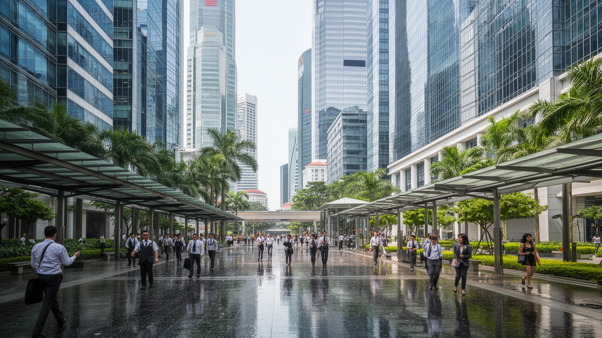
シンガポールの金融街は、東南アジアの資金、保険、投資、貿易決済を扱う窓口である。多国籍企業の地域本部、銀行、資産運用会社、法律事務所、会計事務所が集まり、英語で運用される契約、裁判、仲裁、規制が都市の競争力になる。資源をほとんど持たない国にとって、信用できる制度は港や空港と同じインフラである。企業はここを通じてインドネシア、マレーシア、ベトナム、インド、中国、豪州を見渡し、政治的な安定と迅速な行政を評価する。一方で、金融の集中は高所得層を呼び込み、住宅費や生活費を押し上げる力にもなる。税制、移民政策、資本規制、反マネーロンダリング対策は、都市の評判と社会の公平さを同時に左右する。金融街の高層ビルだけを見れば国際都市の成功が目立つが、その成功は制度への信頼、厳格な管理、専門職教育、言語能力、周辺市場への近さによって組み立てられている。法制度は中立的な舞台であるように見えながら、どの産業を誘致し、どんな労働力を受け入れ、どのリスクを排除するのかを決める。都市の富は数字だけでなく、信用を生産する日々の事務と判断から生まれている。裁判外紛争解決や海事仲裁の機能は、港湾都市としての歴史とも結びつく。金融の透明性を保つ努力は国際評価を高めるが、資産格差や外国資本への依存をめぐる不安も消えない。制度への信頼は、成功の道具であると同時に、市民生活への説明責任を求める圧力にもなる。
シンガポールの暮らしを理解するには、HDBと呼ばれる公共住宅団地を避けて通れない。多くの住民が高層団地に住み、住戸の所有制度、補助、民族比率、近隣施設、駅やバス停との接続が生活の基盤をつくる。市場任せにすれば土地不足と所得格差が住宅危機を深めるため、国家は住宅を社会政策、家族政策、民族調和、資産形成の手段として扱ってきた。団地の下には食堂、商店、診療所、保育施設、広場が配置され、日常の用事は近距離で完結しやすい。一方で、住宅価格の上昇、古い団地の更新、若者の独立、単身者や低所得者の選択肢、外国人労働者の住環境は重要な課題である。HDBは単なる建物群ではなく、国家がどのような家族像と近隣関係を望むのかを示す都市装置でもある。清潔で整った共用空間は生活の安心を生むが、規則の多さや監視の感覚も伴う。住民はエレベーターホール、屋根付き通路、市場、学校を共有しながら、民族や所得の違いを日常的に調整する。島の限られた土地で多数の人が暮らすため、住宅は個人の資産であると同時に、社会を安定させる公共の仕組みになっている。団地の設計は高齢化にも対応し、段差の少ない通路や近隣医療、地域活動の場所が重視される。持ち家を通じた資産形成は安心を与える一方、価格上昇は若い世代に重くのしかかる。住宅政策は成功の象徴であり、将来の不安を映す鏡でもある。
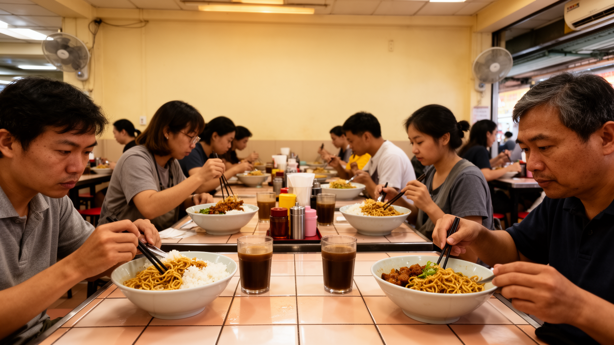
ホーカーセンターは、シンガポールの日常を最もよく映す場所の一つである。中国系、マレー系、インド系、プラナカンなどの料理が一つの屋根の下に並び、朝食、昼食、夕食、夜食まで幅広い時間を支える。高層住宅で暮らす人びとにとって、安く早く食べられる外食は生活の一部であり、職場の昼休みや家族の夕食、年配者の社交の場にもなる。料理は多民族社会の調和を象徴する一方、ハラール、菜食、味の記憶、世代交代、家賃、衛生規制、長時間労働といった現実を抱えている。店主の高齢化や若い担い手の不足は、食文化を守るだけでなく、都市の労働条件をどう改善するかという問題でもある。観光客は有名な料理を求めて訪れるが、ホーカーセンターの本質は名物の列よりも、毎日食べ続けられる価格と近さにある。テーブルを共有し、皿を返し、混雑を読みながら席を探す動作は、都市の公共性を身体で学ぶ時間になる。清潔な管理と雑多な食の活気が同居し、シンガポールらしい秩序と多様性が一つの空間に現れる。食べ物を通じて、移民の記憶、宗教の配慮、生活費、働く時間が見えてくる。料理名は家庭の出自や交易の歴史を運び、同じ皿でも店ごとに味が少しずつ違う。冷房の効いた商業施設とは別に、開かれた食堂が残ることは都市の社会的な余白を守る。安い食事の裏には低い利幅と長い仕込み時間があり、文化の継承は労働条件と切り離せない。
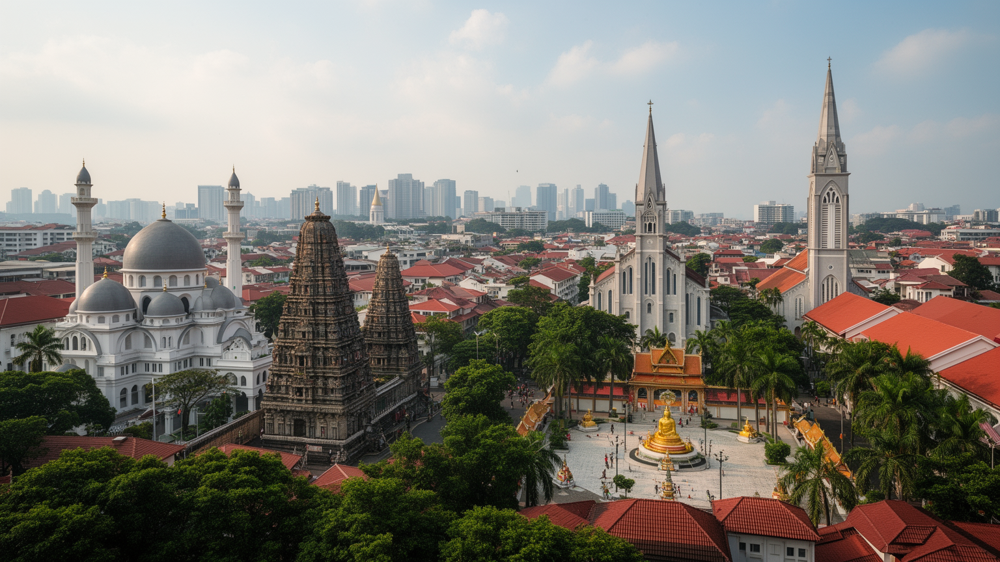
シンガポールでは、寺院、モスク、ヒンドゥー寺院、教会が短い距離に並ぶ街区が珍しくない。仏教、道教、イスラム教、ヒンドゥー教、キリスト教、無宗教の人びとが同じ都市の規則と公共空間を共有し、祝祭の日程や食事の選択、服装、葬儀、結婚、学校生活に違いを持ち込む。公用語として英語、マレー語、中国語、タミル語が置かれ、日常会話では多様な言語が混じる。国家は民族調和を重要な価値として掲げ、住宅や教育、宗教集会、ヘイトスピーチを細かく管理してきた。その仕組みは衝突を抑える力を持つが、自由な表現や少数派の声がどこまで届くのかという問いも残す。多文化は観光用の彩りではなく、狭い島で異なる食、祈り、祝祭、記憶をどう共存させるかという日々の技術である。民族街は保存された展示物ではなく、礼拝、買い物、送金、食事、家族行事が続く生活圏でもある。宗教施設は都市開発の圧力を受けながら、移民や高齢者の支えにもなる。シンガポールの秩序は、多様性を自然に放置するのではなく、制度と近隣の慣習で調整し続けることで保たれている。学校教育や兵役、公共住宅は異なる背景の人を同じ制度に入れる一方、家庭内の言語や信仰は多様なまま残る。祝祭の行列や礼拝の音は、管理された都市にも深い時間があることを示す。共存は完成した状態ではなく、毎日更新される約束である。
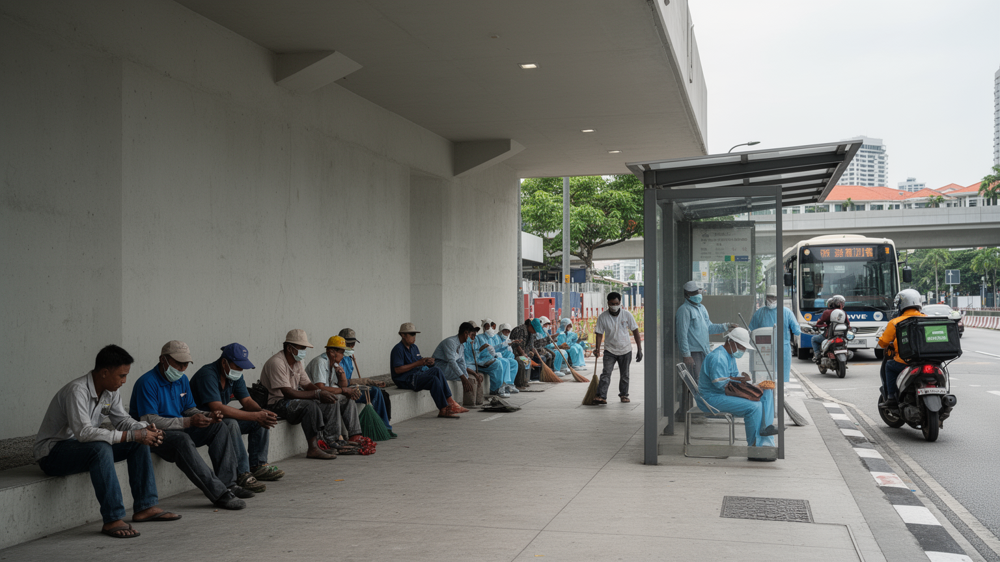
シンガポールの高層住宅、地下鉄、道路、清掃、介護、飲食、物流は、多くの移民労働者に支えられている。建設現場や造船所では南アジアや東南アジアから来た労働者が働き、家庭内では住み込みの家事労働者が高齢者介護や子育てを担う。都市の効率と清潔さは、こうした人びとの長時間労働、送金、寮生活、休日の集まりの上に成り立つ。専門職の移民も多く、金融、技術、医療、教育で高い賃金を得る層がいる一方、低賃金労働者は雇用主やビザ制度に強く依存しやすい。感染症流行時には労働者寮の過密が社会問題として可視化され、都市の成功が誰の生活条件に支えられているのかが問われた。移民労働は一時的な補助ではなく、土地不足と高賃金経済を維持する構造の一部である。リトルインディアや公園の休日の風景は、労働者が都市の中で友人、宗教、食事、送金、休息を取り戻す時間を示す。安全、賃金、住環境、尊厳をどう守るかは、国際都市としての評価に直結する。輝く湾岸の景観を読むには、その下で働く人びとの移動と制約を同時に見る必要がある。休日に集まる広場や送金店は、労働者が都市の中に小さな居場所を作る場である。契約、仲介料、寮の距離、医療へのアクセスは、賃金表だけでは見えない不平等を生む。都市の清潔さと速度を評価するなら、それを担う人の暮らしも同じ地図に置かなければならない。
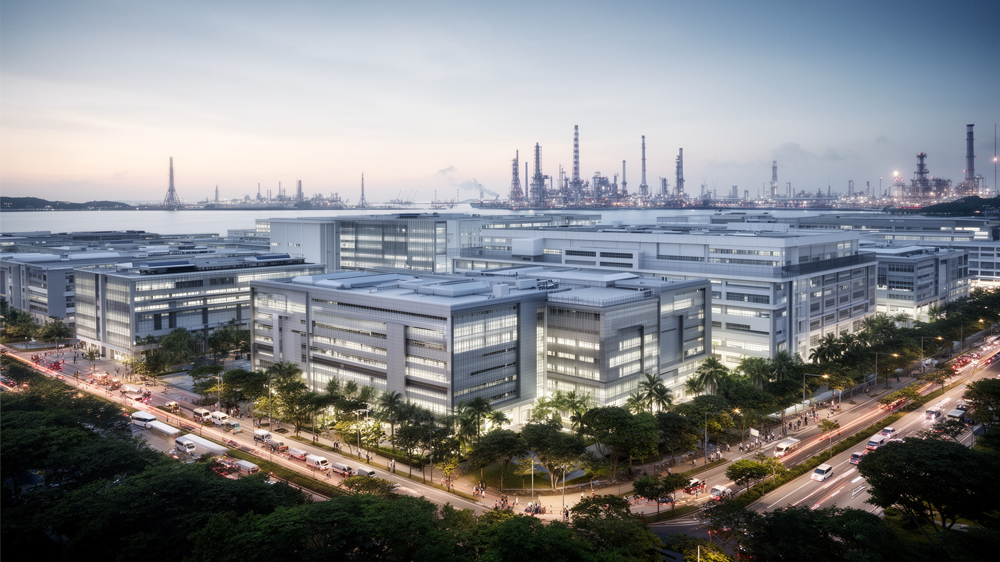
シンガポールは製造業を捨てた都市ではなく、半導体、精密機器、バイオ医薬、化学、データセンター、航空整備など、土地当たりの価値が高い産業を選び抜いてきた。工業団地、研究機関、大学、病院、港湾、空港が近く、試作、輸入、輸出、規制対応を短い距離で結べることが強みである。ジュロン島の石油化学、バイオポリス周辺の生命科学、チャンギ近くの航空関連施設は、観光で見える中心部とは異なる産業都市の顔を示す。政府は教育、税制、研究投資、外国企業誘致を通じて産業の高度化を進めるが、技術者不足、土地制約、エネルギー消費、周辺国との競争は続く。高度な産業は高賃金を生む一方、専門人材と単純労働の差を広げる可能性もある。シンガポールの産業政策は、偶然の市場成長ではなく、国家がリスクを読みながら分野を選択する実験でもある。工場や研究棟は無機質に見えるが、そこには世界の供給網、特許、人材育成、環境負荷が集まっている。港と金融だけではなく、実際に物を作り、検査し、修理する能力を残すことが、都市国家の交渉力を支えている。研究開発は大学や病院だけで完結せず、実験設備、規制当局、海外企業、熟練技術者の協力を必要とする。産業用地は貴重なため、どの工場を残し、どの機能を国外へ移すかは戦略的な判断になる。小さな島の工業は、選択と集中の連続で成り立っている。
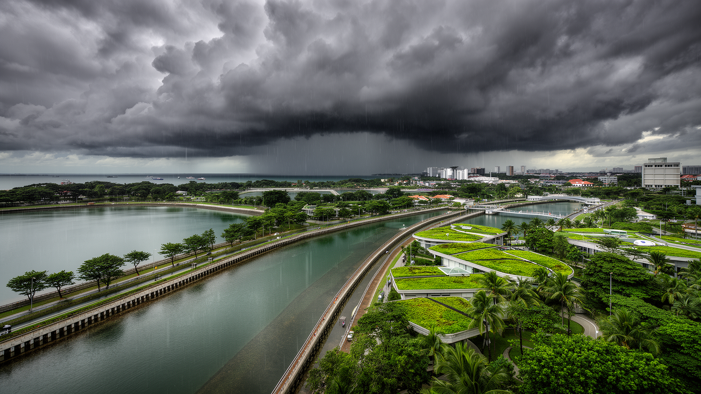
赤道近くのシンガポールは、年間を通じて高温多湿で、激しいスコールに見舞われる。雨は多いが、国土が小さいため水を貯める面積は限られ、輸入水、貯水池、再生水、海水淡水化を組み合わせた水政策が国家の安全保障になっている。街路の排水、運河、貯水池、公園、建物の緑化は、単なる景観ではなく、熱と洪水を抑える都市インフラである。海面上昇は低地の港湾、空港、埋立地、沿岸住宅に長期的なリスクをもたらし、防潮、排水、土地利用の判断を難しくする。気候対策は、豪華な庭園都市のイメージだけでなく、エネルギー消費の多い冷房、データセンター、石油化学、航空需要とも向き合わなければならない。都市の清潔で管理された姿の背後には、水を失わないための技術、料金制度、教育、国際交渉がある。暑さは屋外労働者や高齢者に重くのしかかり、屋根付き通路や木陰の配置も生活の公平さに関わる。雨が降れば道路はすぐに水を受け、晴れれば舗装面が熱を返す。シンガポールは自然を都市から排除するのではなく、厳密に測り、貯め、冷やし、流すことで生存条件を作っている。水の再利用は技術だけでなく、市民が安全性を信頼する社会的な仕組みでもある。気候変動で豪雨と暑熱が強まれば、住宅設計、労働時間、学校生活、医療費まで影響を受ける。水と気候の管理は、島の未来を左右する最も具体的な政治である。
シンガポール観光は、マリーナベイの夜景、庭園、動物園、リゾート、ショッピングだけでなく、チャイナタウン、カンポン・グラム、リトルインディア、カトンの街歩きによって厚みを増す。湾岸の新しい景観は国家の成功を強く印象づけるが、民族街には移民の商い、宗教施設、食、言語、保存建築が積み重なっている。観光客にとって移動しやすく安全な都市であることは大きな魅力だが、その安全さは細かな規則、監視、清掃、交通管理によって支えられる。文化を見せる都市は、同時に文化を整理し、どの姿を前面に出すかを選ぶ都市でもある。祭礼、屋台、ショップハウス、博物館、ホテル開発は、生活の場と観光商品が重なる場所で緊張を生む。シンガポールの観光を読むには、完成された湾岸の眺めと、日常が続く古い街区を往復する必要がある。短い滞在では秩序と便利さが目立つが、家賃、保存、住民の高齢化、商店の入れ替わりは観光地の裏側で進む。都市は過去を丸ごと残すのではなく、経済と記憶の間で編集し続けている。その編集の巧みさと限界が、歩くほど見えてくる。観光産業はホテル、清掃、警備、飲食、交通、展示会を通じて幅広い雇用を生むが、低賃金の仕事も少なくない。夜景や庭園が作る洗練された印象の背後で、地域の店主や住民は日常の場を守っている。観光は都市の魅力を広げると同時に、生活空間を商品化する力も持つ。
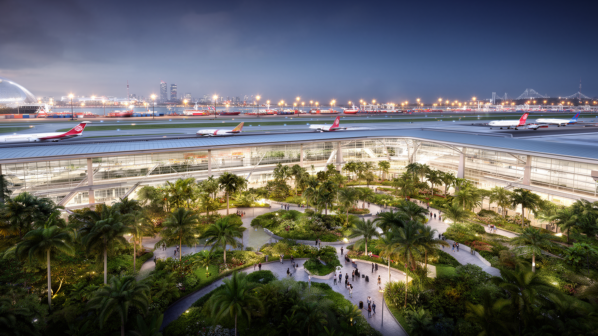
チャンギ空港は、シンガポールのもう一つの港である。航空路は人、貨物、会議、医療、教育、観光を短時間で結び、都市国家の小ささを世界への近さへ変える。空港は単なる交通施設ではなく、商業施設、庭園、ホテル、物流、航空整備、保安、データ管理が重なる都市装置であり、国の第一印象を演出する場所でもある。海港が重い貨物とエネルギーを扱う一方、空港は高価で時間に敏感な部品、医薬品、ビジネス客、乗継客を動かす。二つの結節点があることで、シンガポールは周辺国の市場を支えるだけでなく、危機時の迂回路や供給拠点にもなれる。感染症や国際紛争、燃料価格の変動は航空需要を直撃し、観光、ホテル、飲食、展示会、航空整備の雇用に波及する。接続性の高さは強みだが、外の世界の混乱を速く受け取る弱さでもある。空港で働く保安員、清掃員、整備士、客室乗務員、物流担当者は、都市の国際性を具体的な労働として支える。海と空の動きを合わせて見ると、シンガポールは一つの島でありながら、世界の移動時間を短く編集する機械のように機能している。空港周辺の産業は貨物倉庫、機内食、訓練施設、ホテル、展示会場まで広がり、東部の都市構造を形づくる。乗継客の便利さは、保安と効率を両立させる運用能力に依存する。空と海の結節は、都市の規模以上の影響力を与えている。
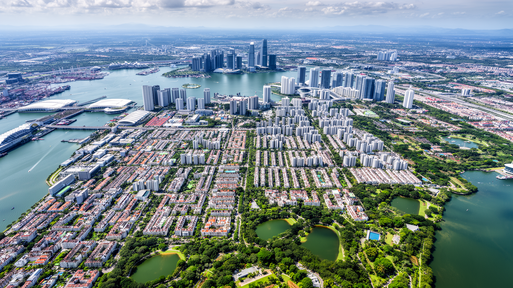
シンガポールは、経済規模や清潔な景観だけで理解できる都市ではない。海峡の地政学、港湾物流、空港、金融、法制度、高付加価値産業、公共住宅、ホーカー文化、多言語社会、宗教の近さ、移民労働、水と気候の管理、土地不足が一つの島に重なっている。国家としての判断と都市としての日常がほとんど同じ場所で起こるため、交通や住宅の細部にも政治が入り込む。効率的な制度は生活を便利にするが、表現の自由、労働者の権利、格差、文化の保存をめぐる緊張も生む。湾岸の夜景は成功の象徴であり、団地の市場や労働者の休日はその成功を支える現実である。シンガポールを見ることは、小さな国が世界市場の中で生き残るために何を選び、何を管理し、誰に負担を配分してきたのかを読むことでもある。観光客にとっては安全で移動しやすい都市だが、住民にとっては住宅価格、教育競争、老後、移民との共生、暑さへの対応が日々の課題になる。島の限界は都市を窮屈にする一方、公共政策を具体的で速いものにもしてきた。成功と制約を同時に見ると、この都市国家の輪郭はより立体的になる。土地の少なさは、住宅、港、空港、軍事施設、貯水池、自然保護区を競わせ、どの用途を優先するかを常に政治問題にする。厳しい規則と都市監視は安心を生むが、市民が異論を述べる空間を狭める面もある。便利さと管理、豊かさと負担を同時に読むことが、この都市を平面的な成功物語から解放する。